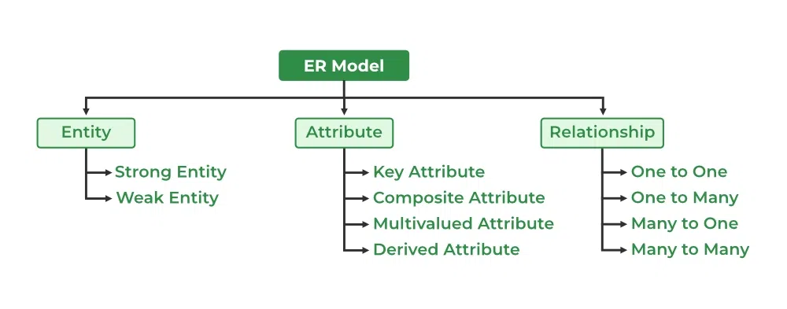
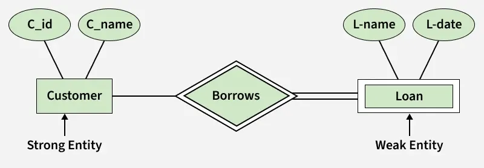
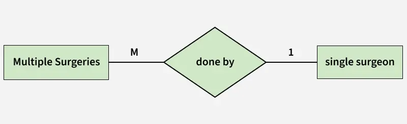

4.12 Entity Relationship Diagrams (ERD)
An Entity Relationship Diagram (ERD) models the static data structure of a system — the entities (things of interest), their attributes (properties), and the relationships between them. ERDs complement DFDs: where a DFD shows how data moves, an ERD shows what data exists and how it is organised (see §4.10).

ER model components

- Entity: A person, place, object, or concept about which data is stored (e.g. Student, Course, Employee). Represented as a rectangle.
- Attribute: A property or characteristic of an entity (e.g. StudentID, Name, DateOfBirth). The set of attributes defines an entity's data.
- Relationship: An association between two or more entities (e.g. Student enrolls in Course). Represented as a diamond or line with cardinality labels.
- Key attribute: Uniquely identifies an entity instance (primary key), such as StudentID.
Cardinality and participation

- One-to-one (1:1): Each instance of entity A relates to at most one instance of entity B, and vice versa (e.g. Employee — EmployeeDetails).
- One-to-many (1:N): One instance of A relates to many instances of B (e.g. Department has many Employees).
- Many-to-many (M:N): Many instances of A relate to many instances of B (e.g. Student enrolls in many Courses; each Course has many Students). Resolved in design by an associative entity.
- Participation: Total participation (mandatory — every entity instance must participate) vs partial participation (optional).
Strong vs weak entities
- Strong entity: Has its own primary key and can exist independently (e.g. Department).
- Weak entity: Depends on another entity (owner) for identification; its key is partially derived from the owner (e.g. Dependent of Employee, identified by EmployeeID + DependentName).
How to draw an ERD
- Identify entities from nouns in requirements documents and user interviews.
- List attributes for each entity and mark the primary key.
- Identify relationships between entities and determine cardinality.
- Draw the diagram using standard notation and label all relationships.
- Review with stakeholders and cross-check against the DFD data stores for consistency.
Exam question — ERD components
Q: What is an ERD? Explain entities, attributes, relationships, and cardinality with examples.
Model answer points:
- Define ERD as static data structure model (entities, attributes, relationships).
- Explain entity, attribute, key, relationship with examples.
- Describe 1:1, 1:N, M:N cardinality and total vs partial participation.
- Distinguish strong entity (own PK) from weak entity (depends on owner).
- Outline drawing steps; mention consistency with DFD data stores.